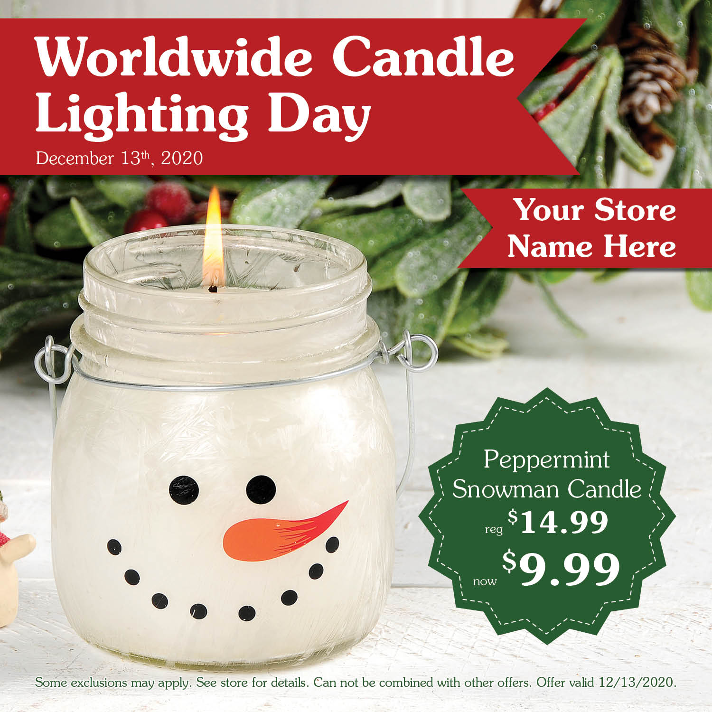
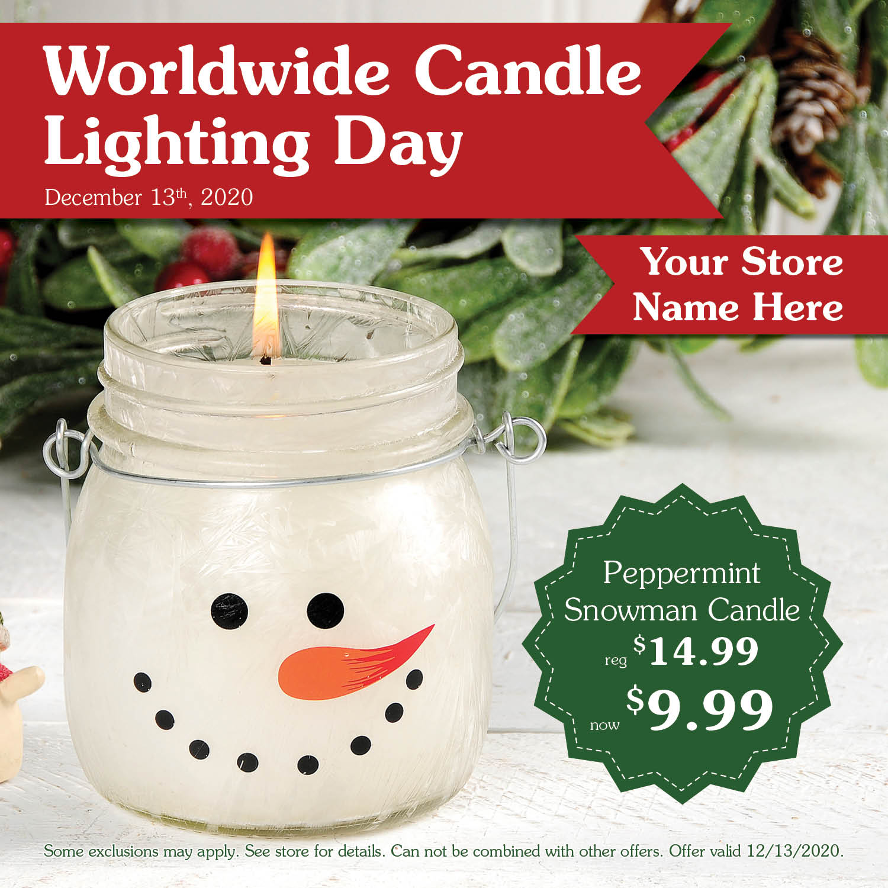

Social Media
At my the marketing company I currently work for I am in charge of maintaining our social media accounts as well as generating assets for our clients. I love how digital design allows you to try things you may not have the collateral to attempt in printed media. Assets designed for clients have to be super accessible and, since a large portion of the customer base I work with don't necessarily have the time or know-how to craft the perfect social media post with catchy descriptions and a list of hashtags to aid engagement, the images I create to give out to clients have to speak for themselves--all info included, versatile for just about any platform, and all-around fool proof.


 
